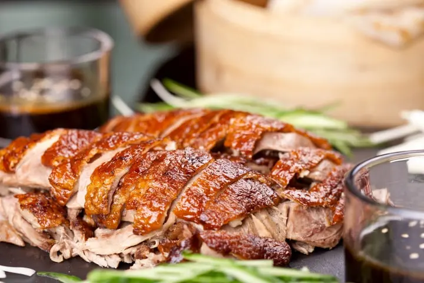
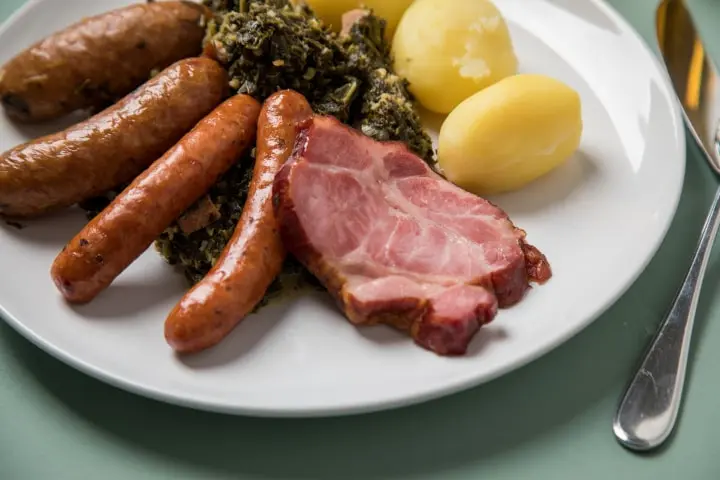

Descripcion: Más allá de un sabor exquisito, la causa de pulpo es una entrada para una cena
formal con una presentación
simple, pero muy elegante. Además, la forma y el color amarillo de la causa, a base de papa, contrastan
perfectamente con el pulpo, que se luce en todo su esplendor y como el plato de entrada perfecto para menú
de
matrimonio.
precio:$10.000
Descripcion:No habrá un mejor plato de entrada para la cena que una rica crema. La de
calabaza, por ejemplo, además de tener un
color muy vistoso, resulta aún más apetitosa si se condimenta con coloridas especias. Y es que no hay nada
mejor que tener una deliciosa crema como entrada de invierno. Sus invitados lo agradecerán.
precio:$8.000

Descripcion:Si les gusta la cocina china, pueden incorporar al banquete el pato laqueado o
a la pekinesa, que es uno de los platos más representativos y apreciados del país oriental. Originaria de
Pekín, la preparación requiere tiempo, pues se siguen varios procesos. Primero se limpia el pato por dentro
y por fuera, y se rellena con una mezcla a base de cebolla, jengibre, sal, cinco especies y vino. A
continuación, se cierran las aberturas de la carne con unos palillos, y en seguida se rocía el pato con agua
hirviendo y sal, se barniza con miel rebajada con salsa de soja y se deja secar, en torno a unas 24 horas.
Finalmente, se lleva al horno resultando un pato de color dorado, crujiente y jugoso. Se sirve en finas
rodajas y con algunas verduras como guarnición.
precio:$15.000

Descripcion:Otra opción para diversificar el menú pueden encontrarla en el Kassler,
Kasseler o filete de Sajonia. Este plato corresponde a un filete de cerdo ahumado que se elabora en un
salazón, con carne procedente de las costillas. Esta preparación es originaria de Berlín y pueden
acompañarla con chucrut, puré de papas o cebolla caramelizada para darle un toque dulce. Ahora, si quieren
prolongar el sabor alemán en su banquete, pueden reemplazar la torta de matrimonio por un kuchen y apostar
por una barra de cerveza artesanal de la zona, entre otras ideas.
precio:$12.000
s Descripcion:El mango es una fruta tropical muy refrescante, por lo que un mousse de mango será un acierto si deciden intercambiar sus anillos de oro en temporada de primavera verano. De textura suave y sabor ligeramente dulce, la preparación es simple, mientras que se puede utilizar mango tanto fresco como congelado. El postre se sirve muy frío y su presentación se puede rematar con unas hojitas de menta. precio:$7.999
Descripcion:Este postre tiene una larga tradición en Chile, pues data de tiempos de la
Colonia. Hay distintas versiones, como helado de canela al agua o helado de canela a la crema, aunque el
resultado siempre es delicioso y muy fresco para capear las temperaturas altas. No obstante, a diferencia de
otros helados, esta receta requiere iniciarse con un día de anticipación, pues se debe refrigerar la mezcla
toda la noche, de modo que esté lo más fría posible al momento de servirlo. La canela tiene un aroma dulce y
fragante que en postres queda espectacular.
precio:$5.000